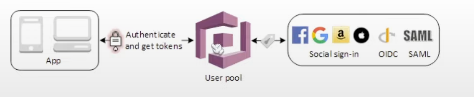

|
i morgen |
Cognito
- Decentralized managed authentication
- Offers authentication (authn) and authorization (authz)
- Allows you to add user registration, sign in and access control
Use cases
- Keeping active directories of users
- Securing apis
- Provide temporary access to AWS resources
- Allow access to upload to S3
Consists of three pieces
- User Pools
- User identity with authentication to IpD to grant access to your app
- Identity Pools
- Provides temporary credentials for users to access AWS services
- Sync
- Syncs user data and preferences across all devices
Web Identity Federation and IpD
- Web Identity Federation
- Exchange identity and security information between identity provider (IpD) and an application
- Identity Provider (IpD)
- trusted provider of your user identity that lets you use authenticate to access other services
- for example: Facebook, Google, Git
- Types of IpD
- SAML
- used for single sign on solution
- OAuth - powered by OpenID connect (OIDC)
Identity Pools
- User directories used to manage the actions for web and mobile apps such as
- sign in
- sign up
- account recovery
- account information
- You can have users directly sign up with you. In this case Cognito is the IdP
- Otherwise you can integrate with other IpD's and Cognito is the identity broker
- Successful user auth generates a JSON web tocken (JWT)
- Tag attributes to create roles

Identity Pools
- Short term access to AWS services
- Tag attributes to create roles
Notes:
- Allows up to 40 million users